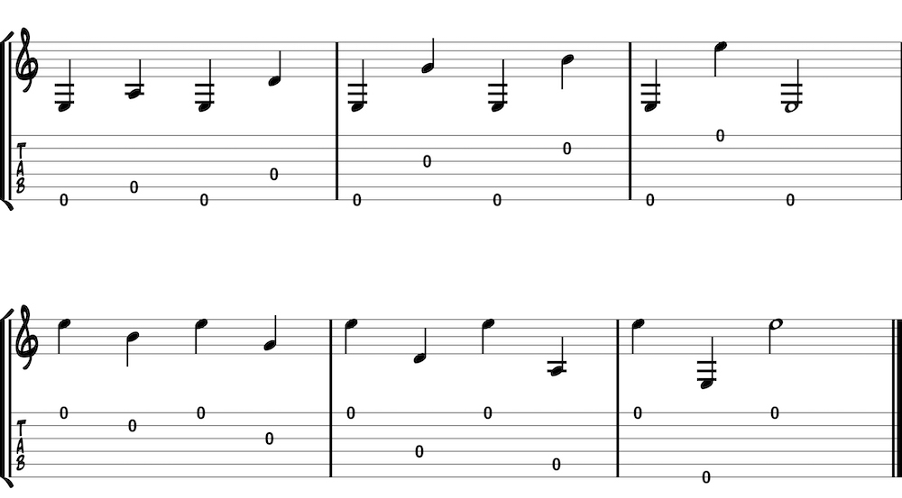

These exercises focus on the right hand. It is not uncommon for a guitarist’s left hand to surpass the right hand’s ability to keep up. A focus on right-hand technique early on will help to counterbalance this tendency. Aspects of these picking exercises may later be applied to left-hand exercises like scales. This exercise helps with pick accuracy by focusing on awkward jumps to non-adjacent strings. It may be difficult to judge which string you are playing without looking at the right hand. This challenge often holds back students who feel as if they must constantly look at each hand before playing. While you progress you will learn to play even the most complicated passages without looking at either hand—this exercise will get you started. Don’t rush into this exercise, or any exercise for that matter. Begin slowly with downstrokes only and eventually progress to upstrokes only and alternate picking (down-up and up-down).
